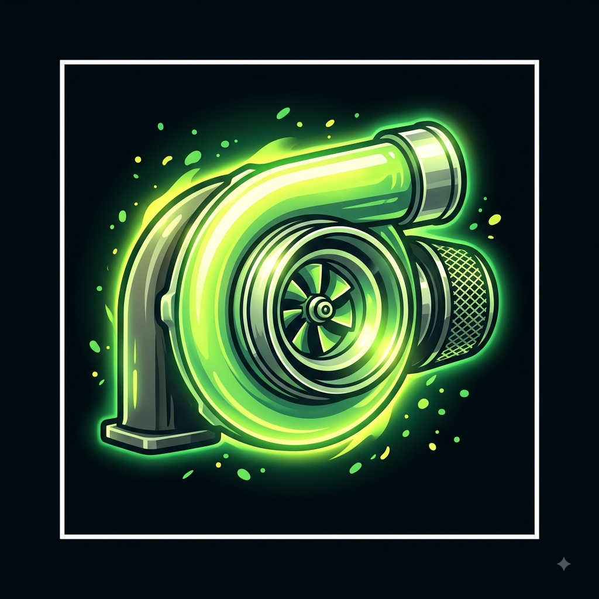

O poder dos turbocompressores
Por: Mateus Felipe Scremim Kasperski
O turbo aproveita os gases do escapamento para empurrar mais ar para dentro do motor. Isso gera uma explosão maior e garante um ganho massivo de cavalaria instantâneo!
Fonte: AutoEsporte